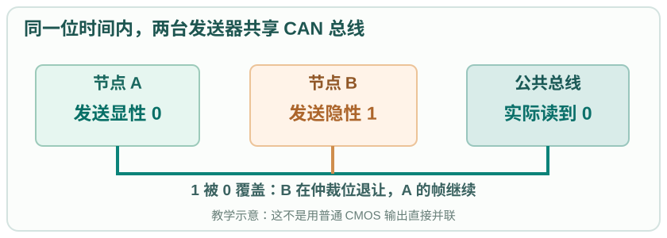
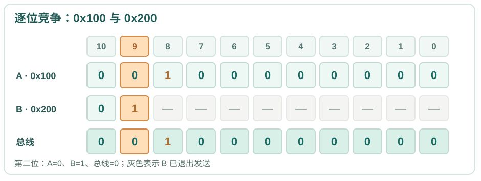
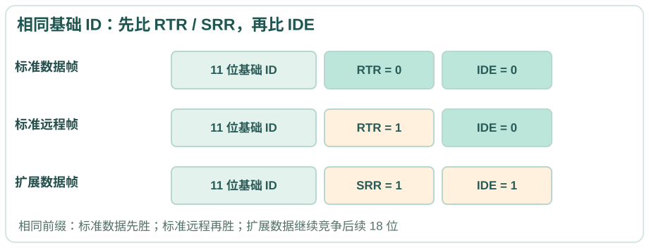

CAN 总线仲裁：两个节点同时发，为什么赢家的帧不会损坏？
从 0x100 与 0x200 的逐位竞争开始，沿着一条线上真实的显性和隐性状态，推导出无破坏仲裁、格式优先级和重试边界。
想象两个 ECU 同时检测到总线空闲，都从 SOF 开始发送。它们如何在共享介质上选出赢家，同时保留赢家已经传输的位？CAN 的答案不是“撞坏再随机等待”，而是边发送、边观察总线，让较低优先级的发送者在第一个不同的仲裁位主动退让。
为什么发出隐性 1，却读到了显性 0？
在 CAN 仲裁模式中，逻辑 0 为显性，逻辑 1 为隐性。只要有节点在相应时刻发送显性 0，公共总线就呈显性；只有所有正在发送的节点都释放为隐性，线路才显示隐性 1。这依赖 CAN 收发器的物理层实现，而不是把普通 CMOS 输出端直接并在一起。CiA · Classical CAN

发送隐性却采样到显性的节点，若正在进行合法仲裁，就知道自己不再是当前优先级最高的发送者，退出本轮发送并转为接收。较高优先级的发送者仍然按原计划继续发送，因此称为无破坏性逐位仲裁。
0x100 与 0x200：究竟输在第几位？
只比较两条经典 CAN 11 位标识符数据帧。标识符从最高有效位开始发送，须写成 11 位：0x100 = 00100000000、0x200 = 01000000000。第一位都是 0，第二位 A 为 0、B 为 1。线上是 0；B 发的是隐性 1 却读到了显性 0，便退出竞争。
B = 01000000000
第 2 个 ID 位：A=0，B=1，总线=0 → A 获胜

这也是“ID 越小，优先级越高”这句口诀的前提：相同格式、两个不同的 11 位标识符，按 MSB 到 LSB 的顺序比较。遇到不同帧类型，就不能只拿十六进制 ID 当数值做排序。
切换情境，看看第一个决定性位在哪儿
逐位仲裁实验
这是仲裁相关字段的教学模型，非完整波形：省略 SOF、动态位填充、CRC 和传播延迟。表格中灰色破折号表示输家已停止本轮发送。
| 位 | ID10 | ID9 |
|---|---|---|
| A | 0 | 0 |
| B | 0 | 1 |
| 总线 | 0 | 0 |
第 1 位：A、B 都发送 0，总线为 0，仍在竞争。
同样的前 11 位，数据帧、远程帧、扩展帧谁优先？
对于经典 CAN，标准数据帧的 RTR=0，标准远程帧的 RTR=1。扩展帧在前 11 位后传输 SRR=1 和 IDE=1；标准格式的 IDE=0。因此即便前 11 位相同，也必须继续比较真正出现在线上的仲裁相关位。CiA · Frame formats
第 12 位是 RTR：0 对 1，标准数据帧先获胜。
同基础 ID 时，RTR/SRR 都是 1；随后标准格式 IDE=0 优于扩展格式 IDE=1。

仲裁失败是故障吗？等待什么时候结束？
合法仲裁失败本身不是位错误：输家转为接收当前帧，并不会仅因这次退让而增加 TEC/REC。正常控制器会在总线重新可竞争时再次请求发送，具体还需看控制器的发送队列、重发配置和发送模式。Kvaser · CAN Error Handling
| 情况 | 表现 | 调试判断 |
|---|---|---|
| 正常仲裁失败 | 赢家继续完整发送；输家改为接收 | 不能仅凭退让判断通信故障 |
| 后续重试 | 发送请求通常会再次参与仲裁 | 受硬件模式、软件取消、队列和负载影响 |
| 数据阶段位错误 | 可能触发错误标志和计数变化 | 这是错误处理，不是优先级比较 |
| 低优先级长期排队 | 等待时间可能超过业务时限 | 检查最坏延迟，不只看平均总线利用率 |
“自动重发”不能解释为任意情况下最终保证送达。某些控制器启用单次发送模式、取消发送请求、软件缓冲区溢出、Bus-Off 或持续高优先级流量，都可能改变交付结果。
同 ID、低优先级和实时性：三个常见误区
误区一：两个发送者 ID 相同，也会自动选出一个
如果两个发送者有相同的完整仲裁字段，它们就无法在仲裁阶段区分彼此。若后续数据位不同，可能触发位错误与错误帧；这不是合法的优先级退让。若后续所有受监测的位都相同，物理层也不能据此识别有多少个节点同时发送。标识符与发送源的规划应避免不受控的同字段争用。Kvaser · Protocol Tutorial
误区二：高优先级报文可以中途抢占正在发送的帧
仲裁只在能够开始新帧时生效。低优先级帧若已经成功获得总线，随后到达的更高优先级帧仍需等当前帧结束及必要间歇。高优先级不等于零等待时间，最坏时延分析还需考虑已有帧阻塞、周期流量、填充位、重发与发送队列。
误区三：为了安全只要把关键帧 ID 设到最小
安全设计应从消息周期、截止时间、故障容忍、端到端需求与整网负载出发分配优先级；不能把“越紧急越小”当作独立的安全保证，也不能用一个固定采样点百分比修复所有仲裁问题。
用 11 位比较确认赢家
最小示例仅模拟相同格式的两个标准数据帧标识符，从最高位开始逐位比较。它不含完整帧、位填充、CRC 或误码状态机。
def first_difference(a, b):
if not (0 <= a <= 0x7FF and 0 <= b <= 0x7FF):
raise ValueError("11-bit ID required")
for index, (x, y) in enumerate(
zip(f"{a:011b}", f"{b:011b}"), start=1
):
if x != y:
return index, a if x == "0" else b
return None
assert first_difference(0x100, 0x200) == (2, 0x100)
assert first_difference(0x123, 0x123) is None项目中另外提供 可运行的完整仲裁字段教学模型，以单元测试验证数据/远程优先级、标准/扩展优先级、相同字段并列，以及无效标识符检查。
问题：标准远程帧和扩展数据帧的前 11 位完全一样，在哪个位置决定结果？
标准帧 RTR=1 与扩展帧 SRR=1 仍相同；在下一位标准帧 IDE=0 覆盖扩展帧 IDE=1。
问题：输了仲裁会让 TEC 增加吗？
不会。合法仲裁退让不是位错误，也不会仅凭一次退让进入 Bus-Off。
问题：两个节点相同 ID 且数据不同，是不是低优先级节点再试一次即可？
不是。相同仲裁字段没有被分出高低，后续不同数据可能引发位错误，需要解决发送源 ID 规划问题。
参考资料
- CAN in Automation · Classical CAN：逐位仲裁、格式区别和优先级。
- Kvaser · CAN Protocol Tutorial：同字段仲裁竞争、错误边界。
- Kvaser · CAN Error Handling：仲裁失败不按位错误处理。
- CiA · CAN DLL generations：经典 CAN、FD、XL 的适用范围。
第四章将继续解释真正的错误检测、错误标志与错误计数，而不是把仲裁退让当作故障。